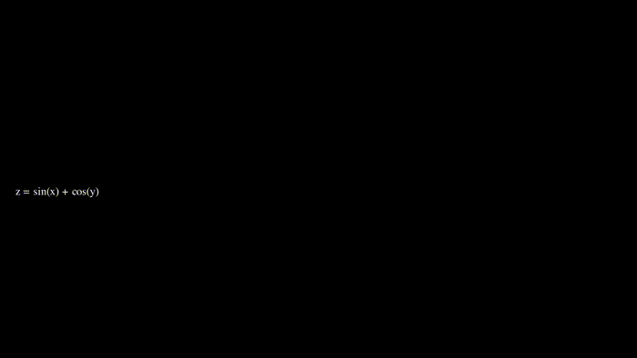

Strands & Agents: Visualizing MCP with Manim
This project explores the intersection of Model Context Protocol (MCP) and Multi-Agent Systems. By leveraging Manim (Mathematical Animation Engine), this tutorial visualizes the complex communication strands and decision-making processes of AI agents in real-time.

For the full source code and agent implementation, check out the project on GitHub → GitHub repository
In this tutorial, you will learn how to build a scalable agentic architecture that utilizes MCP to bridge the gap between LLMs and external data sources, all while creating high-quality programmatic animations to explain the system's logic. Read the full technical deep dive on Medium → Medium Article
Key takeaways from this project:
- Implementing Model Context Protocol (MCP) for seamless agent-tool integration.
- Designing Multi-Agent Orchestration to handle complex, asynchronous tasks.
- Using Manim to generate mathematical animations that visualize agent thought processes and "strands" of execution.
This approach provides a blueprint for developers to not only build advanced AI systems but also to create the visual storytelling tools necessary to explain them to stakeholders and users.
Front page